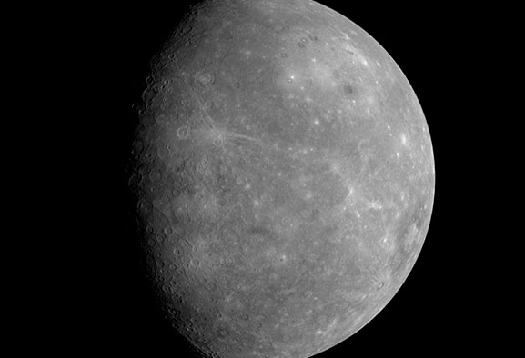
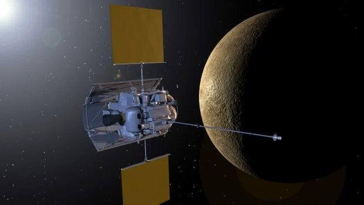

Conhecendo o Sistema Solar – Mercúrio
Esta postagem é apenas um resumo, o link da documentação oficial está => The Harvard Gazette

O menor planeta do nosso sistema solar e mais próximo, Mercúrio é apenas um pouco maior que a lua da terra.
Da superfície de Mercúrio, o sol pareceria mais de três vezes maior do que quando visto da terra, e a luz do sol seria sete vezes mais brilhantes. Apesar de sua proximidade com o sol, Mercúrio não é o planeta mais quente do sistema solar – esse título pertence ao seu vizinho Vênus que conheceremos mais adiante.
Por causa da órbita elíptica – em forma de ovo – de Mercúrio e da rotação lenta, o sol parece nascer brevemente, se pôr e subir novamente de algumas partes da superfície do planeta. A mesma coisa acontece ao contrário ao pôr do Sol.
10 Coisas que você precisa saber sobre mercúrio
-
Mundo pequeno
Mercúrio é o menor planeta do nosso sistema solar – apenas um pouco maior que a Lua da terra.
-
Trilha Interna
Mercúrio é o planeta que orbita mais próximo do Sol.
-
Planeta mais rápido
Mercúrio é o planeta mais rápido do nosso sistema solar – viajando pelo espaço a quase 47 quilômetro por segundo. Quanto mais próximo um planeta está de sua estrela, mais rápido ele tende a viajar. Como Mercúrio é o planeta mais rápido e tem menor distância para viajar ao redor do Sol, ele tem o ano mais curto de todos os planetas do nosso sistema solar- cerca de 88 dias.
-
Superfície áspera.
Mercúrio é um planeta rochoso, também conhecido como planeta terrestre. Mercúrio tem uma superfície sólida e cheia de crateras, muito parecidas com a lua da terra.
-
Composição atmosférica
A fina atmosfera de Mercúrio, ou exosfera, é composta principalmente de Oxigênio(O2), Sódio(Na), Hidrogênio(H2), Hélio(He) e potássio(K).
-
Sem lua
Mercúrio não tem luas.
-
Sem anel
Não há anéis em torno de Mercúrio.
-
Lugar difícil para a vida
É improvável que a vida como a conhecemos possa sobreviver em Mercúrio devido á radiação solar e temperatura extremas.
-
Grande Sol
De pé na superfície de Mercúrio em sua maior aproximação ao sol, nossa estrela pareceria mais de três vezes maior do que na terra.
-
Visitantes Robóticos
Duas missões da NASA exploraram Mercúrio: a Mariner 10 foi a primeira a voar por Mercúrio e a MESSENGER foi a primeira a orbitar. O BepiColombo da ESA está a caminho de Mercúrio.
Cultura Pop
O menor planeta do nosso sistema solar tem uma grande presença no nosso imaginário coletivo.
Dezenas de escritores de ficção científica foram inspirados por Mercúrio, incluindo Isaac Asimov, Cs Lewis, Ray Bradbury, Arthur C Clarke e HP Lovecraft. Os escritores de televisão e cinema também encontraram no planeta um local ideal para contar histórias. No programa de televisão animado “Invader Zim”, Mercúrio é transformado em um protótipo de nave espacial gigante pelos extintos marcianos. E no filme de 2007 “Sunshine”, a espaçonave Icarus II entra em órbita ao redor de Mercúrio para se encontrar com a Icarus I
Messenger: sonda percorreu 7,9 bilhões de quilômetros para chegar ao planeta Mercúrio Nasa
Para mais informações sobre este artigo, visite: